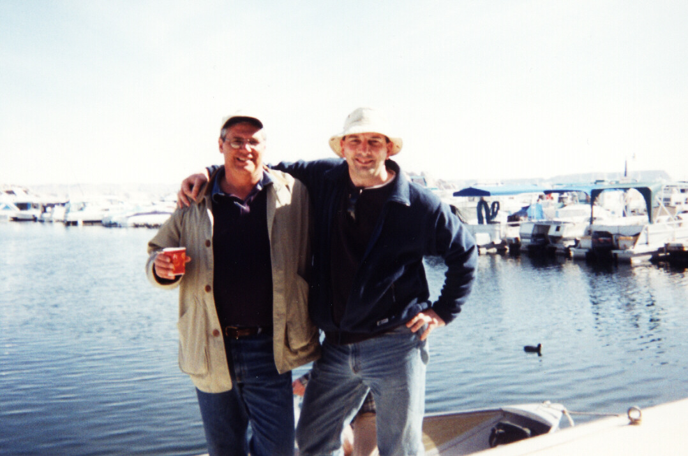
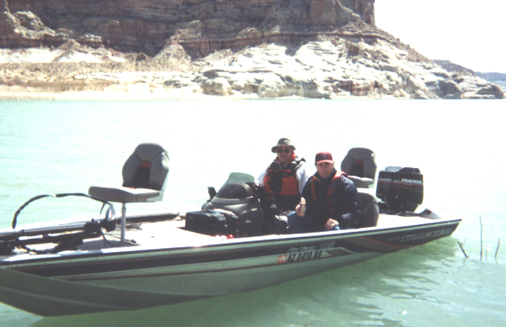
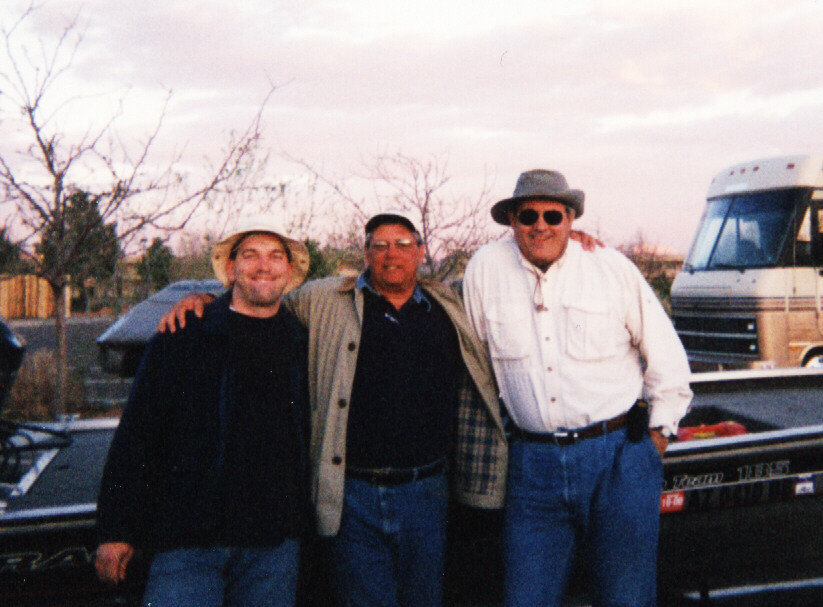
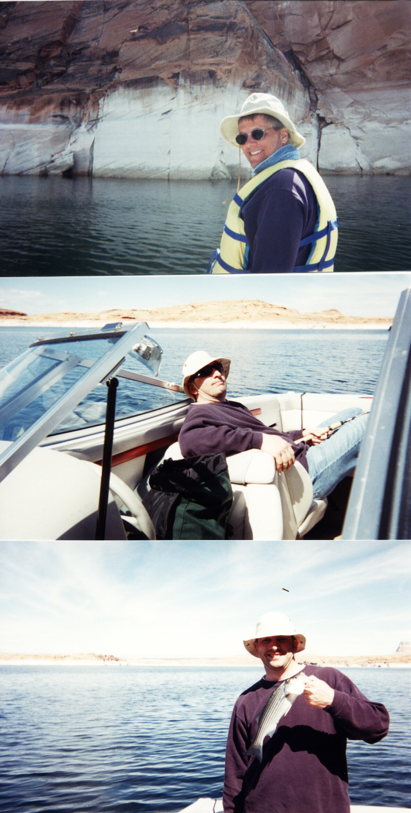

Lake Powell, April 1-2 2000
The characters ...

The two Jo[h]ns... good looking, fantastic fishermen ...
"Boat Boy", the hardworking driver we had drive us to and from the lake, launch our boats, photograph the expedition and repair any malfunctions using Fireline. Unfortunately, this left little time for actual fishing, let alone actual catching. Oh well, next time ...
... obviously a little refreshed. Here we are on the way to the first fishing hole.

These two guys were obviously lost, we traded some cheese for some beer and let them fish with us for the rest of the day...

By the end of the day, we had befriended the big guy ... we used the little guy (not pictured) for chum.
The following sequence says it all ...

Sequence: Happy man, sleeping man, fish man